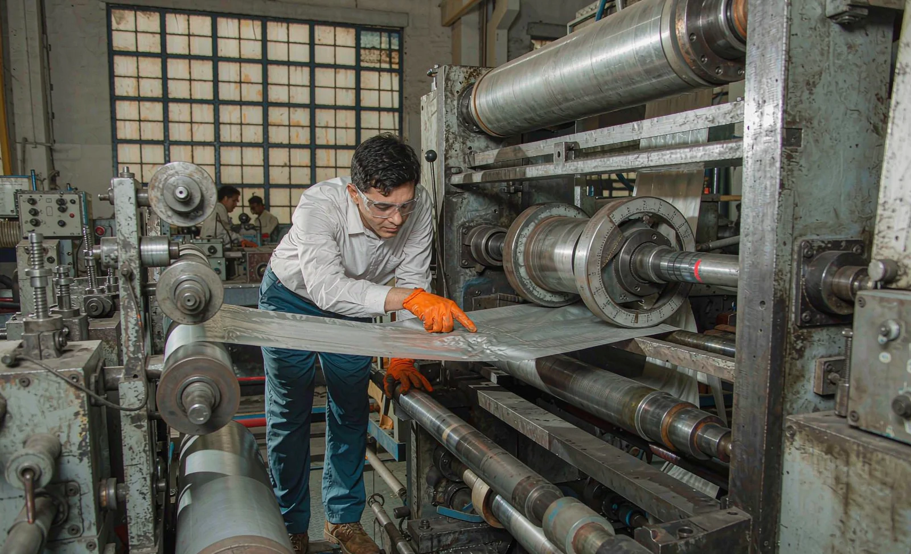

Published October 22, 2026 | By HDPTH Technical Editorial Team
Every converting plant has a scar from wrinkles. A crease that reaches the knives is slit into every downstream roll, and a wrinkle at the rewind builds a soft band into the finished roll. Yet buyers rarely interrogate the anti-wrinkle package the way they interrogate knives or top speed. The causes are few and knowable, and each has a remedy you can write into a specification and test at FAT.
Why wrinkles deserve their own chapter in the specification
Wrinkle causes overlap. The same lengthwise crease can come from a baggy band in the web, a misaligned idler or an over-taut edge entering a nip — and the remedy for each is different. The distinction matters commercially: web defects belong to material control, geometry and tension defects to the machine builder. A specification that names the diagnostic method — where wrinkles are observed, how tension is measured per zone — forces both sides to the right table.
Baggy edges: profile, moisture and the unwind
The classic lengthwise wrinkle that starts with a slack edge is usually the web, not the machine. A gauge profile thicker in the centre leaves the edges longer; moisture loss at the edges of paper and nonwoven after drying does the same. At high tension the loose edge buckles into a crease. The remedies: a bowed spreader roll near the unwind with sufficient wrap, tension setpoints and taper tuned to the material, and supplier profile data so the line is configured for the web you actually buy.
Cores and upstream defects: wrinkles that arrive with the material
Out-of-round, dished or crushed cores, chuck runout and a misaligned unwind station all impose a once-per-revolution disturbance into the web. The signature is periodicity: the wrinkle repeats at a frequency tied to unwind rotation. The buyer’s remedies are half machine, half purchasing policy. Specify core roundness and dimensional tolerances, require runout measurements at the chucks during commissioning, and align the unwind station against the machine datum. A diagnosis that ends at “bad cores” should end with a written core specification — otherwise the complaint returns with the next delivery.
Nip issues: loading, deflection and the wrinkle that feeds forward
A driven nip is where geometry and tension meet, and a prolific wrinkle generator when either is wrong. If the nip loads unevenly across the width — from roll deflection, bearing wear or a single-point loading mechanism — the web is gripped harder in some lanes than others, and the cross-machine tension difference folds the slack side into a crease. Nip wrinkles appear at or just after the nip and feed forward. Require a stated method for uniform nip loading, ask how it is measured, and make a nip check part of the FAT protocol at production speed.
Spreader rolls and web path: geometry you can audit on a drawing
Spreading elements — bowed rolls, rubber-wrapped spreaders, angle bars — belong near the unwind, after long free spans and ahead of the slitting section, where wrinkles concentrate before the knives. Placement matters as much as hardware: too little wrap does nothing, while an over-bowed roll can introduce its own crease. The quieter culprit is the web path — an idler misaligned by a fraction of a degree introduces skew that grows over metres of travel. Demand the web path drawing with wrap angles and idler alignment tolerances, and read it with our guide to bowed spreader rolls on slitter rewinders before approving the layout.
Diagnosing wrinkles from the tension profile
The fastest diagnostic instrument on the machine is the tension signal. Read it zone by zone and correlate it with where the wrinkle starts. A fixed low-tension lane points to a baggy band in the web; a periodic ripple at unwind frequency points to cores or chuck runout; a wrinkle that appears only when nip loading changes points to nip geometry. Then verify: mark the web at the wrinkle’s visible start and check whether the mark lands before or after the rollers you suspect. Change one variable at a time, against the calibrated zero of the load cells.

What to write into the specification
- Web path drawing with spreader-roll positions, wrap angles and idler alignment tolerances.
- Tension zones with load cells or dancers per zone, ranges and calibration procedure.
- Nip loading method across the working width, with a measurable uniformity criterion.
- Unwind runout limits at chucks and core seats, recorded at commissioning.
- Agreed incoming web profile and core quality data, so setup matches real material.
- FAT wrinkle test at production speed on your material, web marked for origin analysis.
Wrinkle behaviour also depends on how tension is sensed and held, so pair this guide with our comparison of load cell versus dancer tension control, and see these elements combined in our high-speed slitting machines.
Fighting wrinkles on your current material?
Send HDPTH your web profile, widths and speed targets. We will document the anti-wrinkle package — spreader strategy, tension zone design, nip loading and FAT diagnostics — in the offer itself.
Submit Your Project InquiryQuestions to put to every vendor
- Where are the spreader rolls, what wrap angles are proposed, and why for this material?
- How is nip loading made uniform across the width, and how will you prove it at FAT?
- What tension measurement exists per zone, and when was the calibration last verified?
- Which wrinkle scenarios will be tested on our material at acceptance, and who supplies it?
Frequently asked questions
What causes baggy edges on the unwind of a slitter rewinder?
Baggy edges usually come from the web itself: a gauge or basis-weight profile that is thicker in the centre and thinner at the edges, or moisture loss at the edges of paper and nonwoven after drying. The machine reveals the condition rather than creating it. Remedies are a bowed spreader roll with the right wrap angle, corrected tension setpoints and taper, and supplier data on the incoming profile.
How do core defects create wrinkles?
Out-of-round, dished or damaged cores, chuck runout and misaligned unwind stations impose a once-per-revolution disturbance into the web. The wrinkle appears as a periodic event tied to unwind rotation, often several metres long. Specify core roundness and dimensional tolerances, require runout measurements at the chucks during commissioning, and align the unwind station against the machine datum.
Can nip roll problems cause web wrinkles?
Yes. A driven nip that loads unevenly across the width — from roll deflection, bearing wear or uneven loading pressure — creates cross-machine tension differences that fold the web. Nip wrinkles typically appear near the nip and feed forward. Require uniform nip loading across the working width, state how it is measured and adjusted, and check the nip impression or footprint during FAT.
Where should spreader rolls be placed on a slitter rewinder?
Spreader rolls work where the web first meets the machine and where wrinkles concentrate before the knives: near the unwind, after long free spans, and ahead of the slitting section. Placement matters as much as the roll itself — too little wrap does nothing, too much wrap or an over-bowed roll can introduce its own crease. Ask for the web path drawing with wrap angles and let the supplier justify each spreading element against your material.
How do I diagnose wrinkles using the tension profile?
Read the tension signal zone by zone and correlate it with where the wrinkle starts. A low-tension lane that tracks across the width points to a baggy band in the web; a periodic ripple at unwind frequency points to cores or chuck runout; a wrinkle that appears only when nip loading changes points to nip geometry. Change one variable at a time, mark the web to confirm where the wrinkle originates, and compare setpoints against the calibrated zero of each zone.
Sources
- ISO 12642 / internal guides: web handling and tension terminology used in converting
- TAPPI: web handling, winding and wrinkle troubleshooting references for paper and film
- AIMCAL: web handling and converting education resources, including spreading and wrinkle control
- TAPPI PRESS: The Mechanics of Rollers and web wrinkle troubleshooting references for paper and film